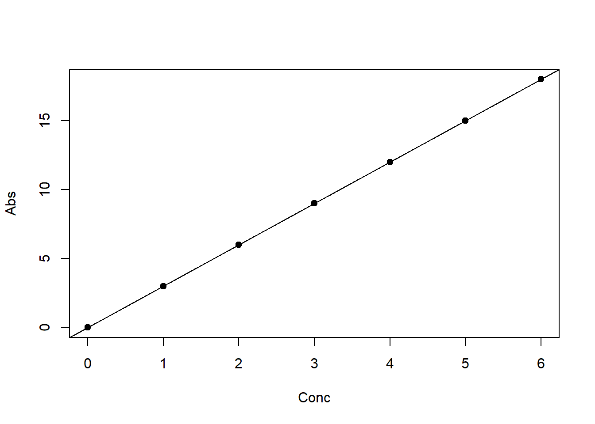
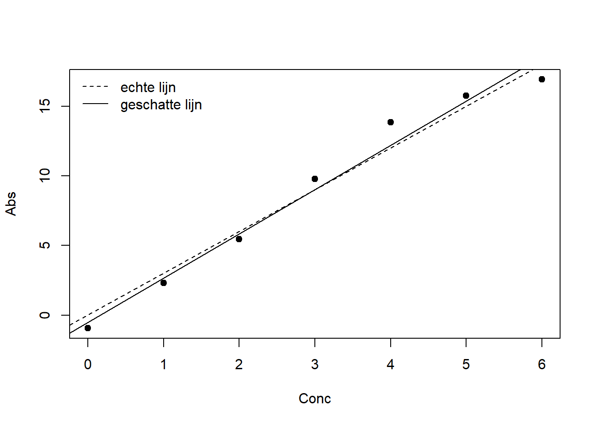
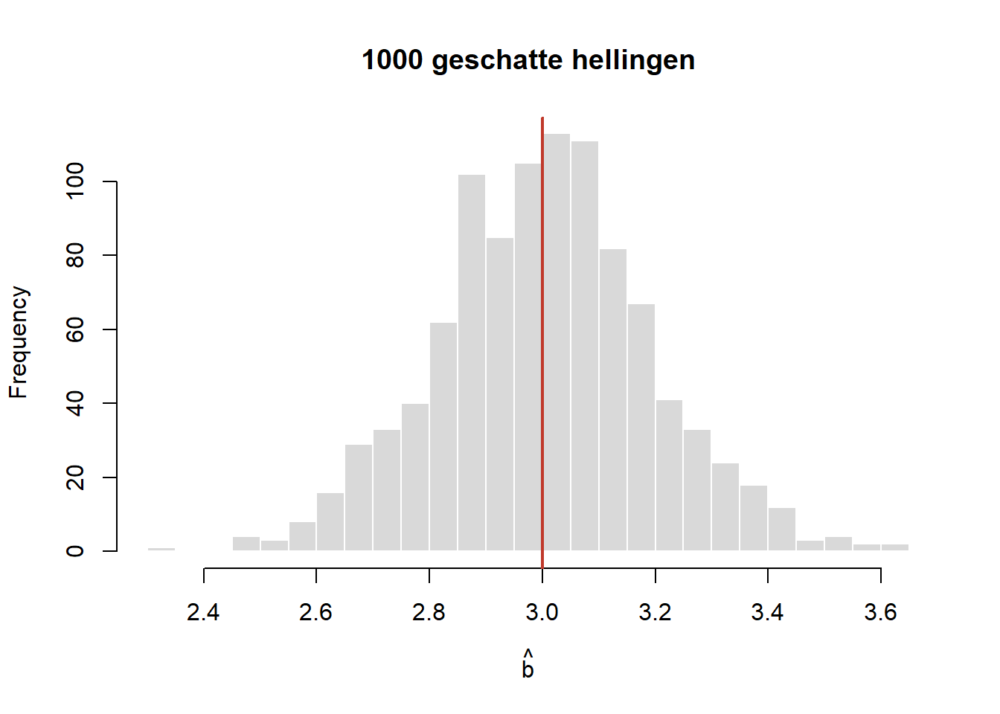

set.seed(2027)Simulatie lineaire regressie
Waarom simuleren?
In het theoriehoofdstuk splitsten we het lineaire model in een deterministisch en een stochastisch deel. Bij echte metingen ken je alleen de uitkomst: de echte waarden van \(a\), \(b\) en \(\varepsilon\) blijven onbekend. Bij een simulatie is het andersom. Je kiest zelf de echte waarden, maakt daarmee nepmetingen, en kijkt hoe goed lm() ze terugvindt. Zo zie je wat regressie wel en niet kan.
Het model
Het statistische model bij jullie experiment is:
\[\text{Abs}_i = \underbrace{a + b \cdot \text{Conc}_i}_{\text{deterministisch deel}} + \underbrace{\varepsilon_i}_{\text{stochastisch deel}}\]
We nemen aan dat de \(\varepsilon_i\) onafhankelijk zijn en normaal verdeeld, met gemiddelde \(0\) en standaarddeviatie \(\sigma\). In deze simulatie kiezen we \(\sigma = 1\).
Toevalsgetallen in R zijn elke keer anders. Met set.seed() leg je het startpunt vast, zodat je bij elke run dezelfde getallen krijgt en de tekst hieronder bij jouw uitvoer past.
Stap 1: de concentraties
Conc <- c(0, 1, 2, 3, 4, 5, 6)
n <- length(Conc) # aantal metingen
n[1] 7Stap 2: de echte parameters
In het echt kennen we deze waarden nooit; in een simulatie kiezen we ze zelf.
a <- 0 # intercept
b <- 3 # richtingscoëfficiënt
sigma <- 1 # standaarddeviatie van het stochastische deelStap 3: het deterministische deel
Eerst maken we alleen het deterministische deel en plotten we dat:
Abs_det <- a + b * Conc
plot(Conc, Abs_det, pch = 19, xlab = "Conc", ylab = "Abs")
abline(a, b)
Alle punten liggen precies op de lijn: zonder stochastisch deel is er geen spreiding.
Stap 4: het stochastische deel
Nu maken we \(\varepsilon\): zeven trekkingen uit een normale verdeling met gemiddelde \(0\) en standaarddeviatie \(\sigma\).
Epsilon <- rnorm(n, mean = 0, sd = sigma)
Epsilon[1] -0.9348780 -0.6938629 -0.5479451 0.7662709 1.8521002 0.7541234 -1.0849792Tussendoor: variantie en standaarddeviatie
Hoeveel spreiding zit er in deze trekkingen? De variantie is de kwadratensom rond het gemiddelde, gedeeld door \(n - 1\):
\[s^2 = \frac{\sum_{i=1}^{n} (\varepsilon_i - \bar{\varepsilon})^2}{n - 1}\]
De standaarddeviatie is de wortel daaruit: \(s = \sqrt{s^2}\).
sum((Epsilon - mean(Epsilon))^2) # kwadratensom rond het gemiddelde[1] 7.41726sum((Epsilon - mean(Epsilon))^2) / (n - 1) # variantie, met de hand[1] 1.23621var(Epsilon) # variantie, met de ingebouwde functie[1] 1.23621sqrt(var(Epsilon)) # standaarddeviatie, met de hand[1] 1.11185sd(Epsilon) # standaarddeviatie, met de ingebouwde functie[1] 1.11185De standaarddeviatie ligt in de buurt van \(\sigma = 1\), maar is niet precies \(1\). Zeven trekkingen zijn een kleine steekproef; een andere steekproef geeft een ander getal.
Waarom we door \(n - 1\) delen en niet door \(n\), hoor je in de cursus statistiek.
Stap 5: het hele model
Nu tellen we beide delen op. Zo ontstaan onze nepmetingen:
Abs <- a + b * Conc + Epsilon
plot(Conc, Abs, pch = 19, xlab = "Conc", ylab = "Abs")
abline(a, b, lty = 2) # de echte lijn
abline(lm(Abs ~ Conc), lty = 1) # de geschatte lijn
legend("topleft", lty = c(2, 1), legend = c("echte lijn", "geschatte lijn"), bty = "n")
De twee lijnen liggen dicht bij elkaar, maar vallen niet samen. lm() ziet alleen de metingen, en die bevatten ruis.
Stap 6: de regressie
Model <- lm(Abs ~ Conc)
summary(Model)
Call:
lm(formula = Abs ~ Conc)
Residuals:
1 2 3 4 5 6 7
-0.4315 -0.3636 -0.3907 0.7504 1.6632 0.3922 -1.6200
Coefficients:
Estimate Std. Error t value Pr(>|t|)
(Intercept) -0.5034 0.7816 -0.644 0.548
Conc 3.1731 0.2168 14.638 2.69e-05 ***
---
Signif. codes: 0 '***' 0.001 '**' 0.01 '*' 0.05 '.' 0.1 ' ' 1
Residual standard error: 1.147 on 5 degrees of freedom
Multiple R-squared: 0.9772, Adjusted R-squared: 0.9726
F-statistic: 214.3 on 1 and 5 DF, p-value: 2.688e-05Vergelijk de geschatte waarden in de kolom Estimate met de echte waarden \(a = 0\) en \(b = 3\). Ook \(\sigma\) wordt geschat: dat is de Residual standard error.
Wat zit er in het model?
Een model-object in R is een lijst met onderdelen. Met names() zie je welke:
names(Model) [1] "coefficients" "residuals" "effects" "rank"
[5] "fitted.values" "assign" "qr" "df.residual"
[9] "xlevels" "call" "terms" "model" Een onderdeel haal je eruit met $ of met een eigen functie:
Model$coefficients # of coef(Model)(Intercept) Conc
-0.5033509 3.1730612 Model$residuals # of resid(Model) 1 2 3 4 5 6 7
-0.4315271 -0.3635733 -0.3907166 0.7504382 1.6632062 0.3921682 -1.6199956 Model$fitted.values # of fitted(Model) 1 2 3 4 5 6 7
-0.5033509 2.6697103 5.8427715 9.0158328 12.1888940 15.3619552 18.5350164 Hetzelfde geldt voor de samenvatting van een model:
names(summary(Model)) [1] "call" "terms" "residuals" "coefficients"
[5] "aliased" "sigma" "df" "r.squared"
[9] "adj.r.squared" "fstatistic" "cov.unscaled" summary(Model)$r.squared # Multiple R-squared[1] 0.9771964summary(Model)$sigma # geschatte sigma[1] 1.147053Stap 7: residuen zijn niet hetzelfde als \(\varepsilon\)
In een simulatie kennen we het echte stochastische deel \(\varepsilon\). De residuen zijn iets anders: de verschillen tussen de metingen en de geschatte lijn, \(\text{Abs}_i - \widehat{\text{Abs}}_i\). Zet ze naast elkaar:
cbind(Epsilon, Residuen = resid(Model)) Epsilon Residuen
1 -0.9348780 -0.4315271
2 -0.6938629 -0.3635733
3 -0.5479451 -0.3907166
4 0.7662709 0.7504382
5 1.8521002 1.6632062
6 0.7541234 0.3921682
7 -1.0849792 -1.6199956Ze lijken op elkaar, maar zijn niet gelijk, omdat de geschatte lijn niet de echte lijn is. Kijk ook naar hun som:
sum(Epsilon) # de echte epsilons: som is niet precies 0[1] 0.1108294sum(resid(Model)) # de residuen: som is 0, op afrondingsfouten na[1] 3.330669e-16De residuen tellen altijd op tot nul, omdat de kleinste-kwadratenlijn door het punt van de gemiddelden gaat. Voor de echte \(\varepsilon\) geldt dat niet.
De kwadratensom van de residuen is de grootheid die lm() zo klein mogelijk maakt:
\[\text{SS}_{\text{res}} = \sum_{i=1}^{n} (\text{Abs}_i - \widehat{\text{Abs}}_i)^2\]
sum(resid(Model)^2) # SS_res van de geschatte lijn[1] 6.578654sum(Epsilon^2) # dezelfde som, maar rond de echte lijn[1] 7.419014De kwadratensom rond de geschatte lijn is kleiner dan rond de echte lijn. Dat kan niet anders: lm() kiest de lijn met de kleinst mogelijke kwadratensom voor déze metingen, en de echte lijn is daar maar één van de kandidaten.
Stap 8: de schatting is zelf een stochastische variabele
Doe je het experiment opnieuw, dan krijg je andere \(\varepsilon\)’s, en dus een andere geschatte helling \(\hat{b}\). Net als de \(\chi^2\)-waarde uit de eerste opdracht is \(\hat{b}\) een stochastische variabele. Met een simulatie kunnen we het experiment duizend keer herhalen:
b_hat <- replicate(1000, {
Abs_sim <- a + b * Conc + rnorm(n, mean = 0, sd = sigma)
coef(lm(Abs_sim ~ Conc))[2]
})
hist(b_hat, breaks = 30, main = "1000 geschatte hellingen",
xlab = expression(hat(b)), col = "grey85", border = "white")
abline(v = b, lwd = 2, col = "#c0392b") # de echte b
mean(b_hat) # ligt dicht bij de echte b = 3[1] 3.003273sd(b_hat) # de spreiding van de schatting[1] 0.1912228De schattingen liggen rond de echte waarde \(b = 3\), met een spreiding van ongeveer \(0{,}19\). Die spreiding heet de standaardfout van \(\hat{b}\). In de uitvoer van summary(Model) staat een schatting ervan in de kolom Std. Error, berekend uit één enkele dataset:
coef(summary(Model))["Conc", "Std. Error"][1] 0.2167727Probeer zelf
- Maak
sigmagroter, bijvoorbeeld3. Wat gebeurt er met de spreiding van de punten rond de lijn, met \(R^2\) en met de spreiding vanb_hat? - Meet bij meer concentraties, bijvoorbeeld
Conc <- 0:20. Wat gebeurt er met de spreiding vanb_hat? - Zet
set.seed()uit (met een#ervoor) en draai alles een paar keer opnieuw. Welke uitkomsten veranderen, en welke blijven gelijk?